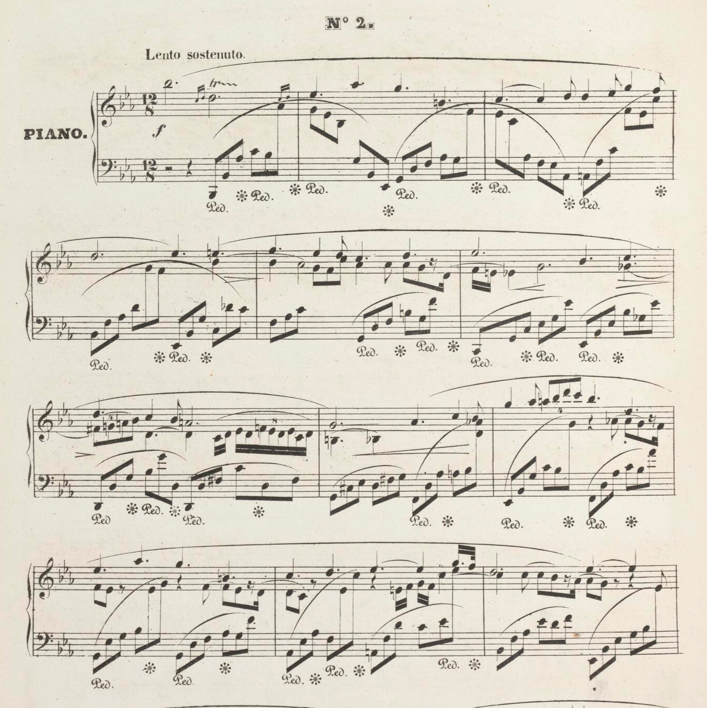

La musique est une source d'inspiration et de créativité. Elle a le pouvoir de changer nos humeurs, de raconter des histoires et de rassembler des gens de tous horizons. J'aime explorer différents genres comme le classique, le jazz, et les bandes-son de jeux vidéo, qui m'aident à me concentrer et à me relaxer.
Parmi mes artistes préférés, Frédéric Chopin se démarque. Ses compositions pour le piano comme sont inoubliables et transportent l'écouteur dans un voyage émotionnel unique.
